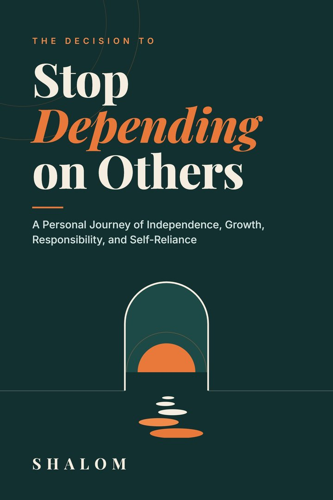

Editing
My main service. Big issues first, polish last, so you never pay to perfect a paragraph that later gets cut.
See editing servicesBook editing is my main work. I also format interiors and design covers for self-publishing authors in the United States and Nigeria. Nine years of experience, and one person from first read to final file.
Send 500 words. Get them back edited, with a comment on every change.
Editing, formatting and cover design for authors in the United States and Nigeria.



“He was frank and precise in presenting the strengths and weaknesses of my manuscript.”
“His recommendations for revision were extremely useful.”
“Tijani gave clear, honest feedback and really cared about the story.”
“Exceptionally detailed, thoughtful, and constructive feedback.”
“Did an excellent job while preserving the original voice and meaning of my manuscript.”
“Your suggestions are incredibly helpful.”
“You have an eye, Tijani.”
Why books fall short
Readers forgive a lot. They don’t forgive a book that feels unfinished.
A point you love lands three times in almost the same words, so by the third time it no longer surprises anyone. Editing finds where each idea works hardest.
A missing full stop, a contents page that does not match the chapters, an unnamed copyright holder. Readers and reviewers notice these in the first pages.
Default headings, no contents page and page numbers that change style. Formatting turns the file into pages that feel like a real book on Kindle and in print.
On a store page the cover is a thumbnail. If the title and author name cannot be read at that size, the book is passed over before anyone reads a word.
What I do
Editing is my main work. When your words are ready, I format the interior and design the cover, so nothing gets lost in a handoff.
My main service. Big issues first, polish last, so you never pay to perfect a paragraph that later gets cut.
See editing servicesTitle page, contents, chapter openers and page numbers, laid out for Kindle eBooks, paperbacks and hardcovers on Amazon KDP.
You getA print-ready interior file, and a sample page of every layout in the portfolio to open and read.
See formatting samplesFront, spine and back designed as one wrap, with print specs and mockups ready for your launch. The cover promises what the book delivers.
You getA full-wrap cover file for print and a front cover for your Kindle listing.
See cover designsHow it works
By email or WhatsApp, with a line about your book, what you need (editing, formatting, a cover or all three) and your goal for it.
Send your first 500 words. I edit them with tracked changes and a comment explaining each change. You judge my eye and my respect for your voice. No obligation.
Tell me the word count, genre, formats you need and your launch date. I recommend the right level of editing and quote from there.
A developmental read comes before any polish, then a line edit and copyedit, each change with a reason. Where I need your input, I ask instead of guessing.
Once the text is settled, I lay it out as a book: front matter, contents, chapter openers and page numbers, for Kindle and print.
Front, spine and back as one wrap, then a final proofread and publication-ready files, all from the same hands.
Edits in action
Every change comes with what I changed, why, and what it does for your book. Pick an example and switch between the original, my version and the tracked changes.
Once I had taken the first step, I discovered that learning a skill was not going to be as simple as I had imagined. There were things I understood quickly and others that required much more patience. There were days when I felt like I was making progress and other days when I questioned whether I was improving at all.
Once I took that first step, I found that learning a skill was harder than I had imagined. Some things came quickly; others demanded patience. On some days I felt I was making progress; on others I wondered whether I was improving at all.
Once I had taken thetook that first step, I discoveredfound that learning a skill was not going to be as simple asharder than I had imagined. There were things I understood quickly and others that required much more patience.Some things came quickly; others demanded patience. There were days when I felt likeOn some days I felt I was making progress and other days when I questioned; on others I wondered whether I was improving at all.
Chapter 4, opening paragraph. 60 words became 44, with every idea kept.
Chapter 1: “I began to understand that confidence often comes after action, not before it.”
Chapter 3: “You may wait for confidence, but sometimes confidence comes because you started.”
Chapter 7: “You do not always need confidence to take action. Sometimes action creates confidence.”
Chapter 1 plants it. Keep the line exactly as written.
Chapter 3 shows the fear of starting. Keep the story, cut the restatement.
Chapter 7 proves it with one real moment from the author’s own learning.
Chapters 1, 3 and 7. One idea, three jobs, instead of one idea told three times.
TABLE OF CONTENT
…intended for inspiration and educational purposes
Copyright © 2026 All rights reserved.
TABLE OF CONTENTS
…intended for inspiration and educational purposes.
Copyright © 2026 [Author’s full name]. All rights reserved.
TABLE OF CONTENTS
…intended for inspiration and educational purposes.
Copyright © 2026 [Author’s full name]. All rights reserved.
Front matter: contents page and copyright page. Three small slips, and one question I could not answer for you.
Excerpts come from a sample manuscript (The Power of Learning a Skill, author name: Shalom) prepared to show my process.
My work
Four client projects and two sample projects. Open any one to read what came in, what I did and what the author received.
by Edward L. Betz Jr.
A Christian novel taken from a rough draft to a live Kindle book.
by Adam Altamery
An honest reader’s report on the opening pages of a nonfiction title.

by Clara
A plain Word manuscript turned into a designed, proofed book interior.
Sample project
A sample edit of a ten-chapter personal-growth manuscript, with a matching full-wrap cover.
Sample project
A sample edit of a ten-chapter memoir, with a matching full-wrap cover.
Formatting and cover design
Each card shows the best page of a formatted interior. Click one to read the whole formatted PDF.
About me
I’m a book editor with nine years of experience, helping self-publishing authors turn drafts into books they’re proud to put their name on.
Editing is my main work: developmental, line and copy editing, proofreading and manuscript assessment. I also format interiors for Kindle and print and design covers, so the promise on the cover matches what’s inside.
I work with authors in the United States and Nigeria, by email and WhatsApp, and I can help whether you are publishing for the first time or the fifth.
My rule is simple. I tighten and clarify. I don’t rewrite you.
Lines that carry your personality are left exactly as written, and I tell you which ones.
Each edit comes with a comment and a reason, so you learn the pattern.
Where I need your input, I flag it as a question instead of guessing.
Editing, formatting and cover design come from the same hands, so nothing gets lost in a handoff.
Reviews
Gathered from Upwork, LinkedIn and Fiverr.
Video review from a client.
“I highly recommend Tijani Uthman as a book editor and manuscript consultant. … He delivered exceptionally detailed, thoughtful, and constructive feedback that went far beyond what I expected. Tijani provided a comprehensive 24-page review covering high-level structure, pacing, character development, plot clarity, tense consistency, dialogue formatting, and more. … He has a sharp editorial eye and a real gift for spotting both strengths and areas needing improvement. … Working with him felt collaborative and supportive, exactly what a writer needs when polishing a story with a meaningful message.”
“Tijani did a sample edit for me. Instead of just doing a few pages, he did the first few chapters of my book. His observations were spot on and were aligned with what my instincts were telling me. His recommendations for revision were extremely useful, and I’ll be implementing them soon. Overall, Tijani is professional, respectful, flexible, and has a keen eye for spotting areas that can be improved. I would highly recommend Tijani for all of your editing needs.”
“He was frank and precise in presenting the strengths and weaknesses of my manuscript; honestly, he was very helpful.”
“Thank you so much for taking the time to read my chapter and sharing such thoughtful feedback, Tijani. You hit the nail on the head! I realize now that I spent too much time trying to explain the lesson rather than letting the story and characters show it. … Your suggestions are incredibly helpful, and I am excited to edit the chapter with this new perspective. I highly recommend Tijani for your editing project.”
“I had the pleasure of having Tijani as a reader, and it was a great experience. Tijani gave clear, honest feedback and really cared about the story. … If you’re looking for a reader who is thoughtful, reliable, and truly wants your book to succeed, I highly recommend Tijani.”
“Tijani delivered professional work that went beyond my expectations. He was thorough, attentive to detail, and did an excellent job while preserving the original voice and meaning of my manuscript. I highly recommend Tijani for your next project, and I look forward to working with him again on future projects.”
“Tijani is very easy to work with … I offered TIJANI THE JOB AS ONE OF MY 3 CHIEF SCREENPLAY EDITORS …”
Questions
Can’t find yours? Ask in the form below or on WhatsApp and I’ll reply personally.
Free sample edit
You get them back with tracked changes and a comment on each change, so you can judge my work before you commit to anything. Need formatting or a cover too? Choose it in the form and tell me about your book.